invested <- function(a_1, a_2) {
u_a = (1 - a_1) * log(1 - a_1) + a_1 * log(2 * a_1) # give a1
u_b = (1 - a_1) * log(2 * a_2) + a_1 * log(2 * (1 - a_2)) # give 1
ifelse(u_a > u_b, a_1, 1)
}
average_invested <- function(a_1)
mean(sapply(seq(0, 1, .01), invested, a_1 = a_1))
returned <- function(x1, a_2 = 1/3)
((2 * a_2 * x1 - (1 - a_2) * (1 - x1)) / (2 * x1)) *
(x1 > (1 - a_2) / (1 + a_2))
average_returned <- function(a_2)
mean(sapply(seq(0.01, 1, .01), returned, a_2 = a_2))29 Behavioral games
We declare a trust game and explore the implications of using deception in the game setup. The diagnosis highlights how the choices in the first round of a game, which are not randomized, affect our ability to study the behaviors of the player in the second round without bias.
Behavioral games are often used to study difficult-to-measure characteristics of subjects like risk attitudes, altruism, prejudice, or trust. The approach involves using labs or other mechanisms to control contexts. A high level of control brings two distinct benefits. First, it can eliminate noise: we obtain estimates under a particular well-defined set of conditions rather than estimates generated from averaging over a range of possibly unknown conditions. Second, more subtly, it can prevent various forms of confounding. For instance, outside the lab we might observe how people act when they work on tasks with an outgroup member. But we only observe the responses among those that do work with out group members, not among those that do not. By studying behaviors in a controlled setting we can see how people would react when put into particular situations.
The approach holds enormous value. But, as highlighted by Green and Tusicisny (2012), it also introduces many subtle design choices. Many of these can be revealed through declaration and diagnosis.
We illustrate using the “trust” game in which we specify three common inquiries and use a standard design in Declaration 29.1. The design is successful at generating unbiased estimates of the first inquiry but runs into problems with the other two.
The trust game has been implemented hundreds of times to understand levels and correlates of social trust. Following the meta-analysis given in Johnson and Mislin (2011) we consider a game in which one player (Player 1, the “trustor”) can invest some share of $1. Whatever is invested is then doubled. A second player (Player 2, “the trustee”) can then decide what share of the doubled amount to keep for themself and what share to return to the trustor.
As described by Johnson and Mislin (2011), “trust” is commonly measured by the share given and “trustworthiness” is measured by the share returned. With the MIDA framework in mind, we will be more specific and define the inquiry independent of the measurement. We define “trust” as the share that would be invested by a trustor when confronted with a random trustee, whereas “trustworthiness” is the average share that would be returned over a range of possible investments.
To motivate M we assume the following decision making model. We assume that each person \(i\) seeks to maximize a weighted average of logged payoffs:
\[u_i = (1-a_i) \log(\pi_i) + a_i \log(\pi_{-i})\]
where \(\pi_i, \pi_{-i}\) denotes the monetary payoffs to \(i\), \(-i\) and \(a_i\) (“altruism”) captures the weight players place on the (logged) payoffs of other players.
Let \(x\) denote the amount sent by the trustor from the endowment \(1\).
The trustee then maximizes:
\[u_2 = (1-a_2) \log((1-\lambda)2x) + a_2 \log((1-x) + \lambda 2x)\]
where \(\lambda\) denotes the share of \(2x\) that the trustee returns. Maximizing with respect to \(\lambda\) yields:
\[\lambda = a_2 + (1-a_2)\frac{x-1}{2x}\]
in the interior. Taking account of boundary constraints,1 we have best response function:
\[\lambda(x):= \max\left(0, a_2 + (1-a_2)\frac{x-1}{2x}\right)\]
Interestingly, the share sent back is increasing in the amount sent because player 2 has greater incentive to compensate player 1 for their investment. If the full amount is sent then the share sent back is simply \(a_2\).
Given this, the trustor chooses \(x\) to maximize:
\[u_1 = (1-a_1) \log\left(1 - x + \lambda(x)2x\right) + a_1 \log\left(\left(1-\lambda(x)\right)2x\right)\]
In the interior this reduces to:
\[u_1 = (1-a_1) \log\left((1 + x)a_2\right) + a_1 \log\left((1-a_2)(1+x)\right)\]
with greatest returns at \(x=1\).
For ranges in which no investment will be returned, utility reduces to:
\[u_1 = (1-a_1) \log\left(1 - x\right) + a_1 \log\left(2x\right)\]
which is maximized at: \(x = a_1\).
The global maximum depends on which of these yields higher utility.
Figure 29.1 shows the returns to the trustor from different investments given their own and the trustee’s other-regarding preferences. We see that when other-regarding preferences are weak for both players, nothing is given and nothing is returned. When other regarding preferences are strong for player 1, they offer substantial amounts even when nothing is expected in return. When other-regarding preferences are sufficiently strong for player 2, player 1 invests fully in anticipation of a return.

The predictions of this model are then used to define the inquiry and predict outcomes in the model declaration. The model part of the design includes information on underlying preferences. For this we make use of a set of functions that characterize stipulated beliefs about behavior.
The inquiries for this design are the expected share offered to different types of trustees, the expected returns, averaged over possible offers, and the expected action by a trustee when the full amount is invested. The data strategy involves assigning players to pairs and orderings. The first half is assigned to the trustor role and matched with the second group that are assigned the trustee role. For the answer strategy, we simply measure average behavior across subjects. As a wrinkle, we include the possibility that the experimenter confronts the returners with random offers rather than the ones actually made by their partners. This aspect of the design is controlled by an argument called deceive and turns out to be important for inference.
Declaration 29.1 Trust game design
rho <- 0.8
n_pairs <- 200
deceive <- FALSE
declaration_17.6 <-
declare_model(N = 2 * n_pairs,
a = runif(N)) +
declare_inquiries(
trusting = mean(sapply(a, average_invested)),
trustworthy = mean(sapply(a, average_returned))) +
declare_assignment(pair = complete_ra(N = N, num_arms = n_pairs),
role = 1 + block_ra(blocks = pair)) +
declare_step(
id_cols = pair,
names_from = role,
values_from = c(ID, a),
handler = pivot_wider) +
declare_measurement(invested = invested(a_1, a_2)) +
declare_estimator(
invested ~ 1,
.method = lm_robust,
inquiry = "trusting",
label = "trusting") +
declare_measurement(invested = deceive*runif(N) + (1-deceive)*invested,
returned = returned(invested, a_2)) +
declare_estimator(
returned ~ 1,
.method = lm_robust,
inquiry = "trustworthy",
label = "trustworthy")A few features are worth highlighting. First, the inquiries are defined using a set of hypothetical responses under the model using a specified response function. However the inquiry is robust to the model in the sense that it remains well defined even if you stipulate very different behaviors. Second, the declaration involves a step where we shift from a “long” data frame with a row per subject to a “wide” data frame with a row per game. Third, the design orders steps so that an estimation stage is implemented before a measurement stage; this is a little unusual but it is done in this way to allow the researchers to analyze Player 1 investment decisions before (possibly) replacing them with fabricated decisions.
Data generated by this design might look like this:
| pair | ID_2 | ID_1 | a_2 | a_1 | invested | returned |
|---|---|---|---|---|---|---|
| T1 | 357 | 026 | 0.69 | 0.51 | 1.00 | 0.69 |
| T2 | 298 | 103 | 0.60 | 0.22 | 1.00 | 0.60 |
| T3 | 362 | 390 | 0.65 | 0.09 | 1.00 | 0.65 |
| T4 | 249 | 224 | 0.50 | 0.96 | 0.96 | 0.49 |
| T5 | 152 | 304 | 0.32 | 0.33 | 1.00 | 0.32 |
| T6 | 250 | 244 | 0.94 | 0.21 | 1.00 | 0.94 |
We have a row for each game, we have the (unobserved) \(a_i, a_j\) parameters as well as actions by both players in the data.
Diagnosis 29.1 illustrates the properties of the trust game design.
Diagnosis 29.1 Trust game diagnosis
diagnosis_17.5 <-
declaration_17.6 |>
redesign(deceive = c(TRUE, FALSE)) |>
diagnose_design() 
We see that we do well for the first inquiry whether or not deception is used. The first inquiry–trusting–is after all a simple measurement of choices albeit in a controlled setting. But we do poorly for the second and third inquiries.
Whether we have bias in the measure of trustworthy depends on the use of deception, however, and so presents researchers with a serious design challenge.
There are two distinct reasons for the bias when Player 2 is confronted with the investments made by Player 1. First, the stage 2 distribution of investments differs from the distribution specified in the definition of the inquiry. Although we have assigned roles randomly, the choices confronting Player 2 are not random: they reflect the particular assignments generated by Player 1’s choices. These player-generated assignments are generally higher than those specified in the definition of the inquiry, resulting in higher returns than would arise from random offers. A second source of bias is self-selection in stage 2. Even if the distribution of offers confronting the trustees in the second stage were correct, we could still suffer from a problem that the trustees that are sent larger investments are sent those investments partly because trustors expects them to return a large share. The bias on the third inquiry — which conditions on the full amount being sent— suggests that this is indeed a concern in this design, though the magnitude of the bias is substantively small.
These problems are, we think, very common in games that involve the analysis of decisions that depend on prior decisions. Switching out the offers solves both of these problems but at the cost of deception.
Many experimental labs have developed quite strong norms against the use of deception. Some alternatives might exist that could be functionally equivalent. One approach would be to limit the information that players have about each other. We assumed in this design that players had enough information on each other to figure out \(a_{-i}\). Say instead that information on players were coarsened — for instance so that players know only each other’s gender and ethnicity. In this case we might have a small set of “types” for Player 1 and Player 2. Conditional on the type pair, the variation in offers is as-if random with respect to a Player 2’s characteristics and one could assess the average response of each Player 2 type to each offer received from a Player 1 type. This approach would address the selection problem. The problem of non-random offers could be sidestepped by redefining the inquiry to be responses conditional on particular offers (such as the return of a 100% investment).
Another approach is to in fact do a mixture of reporting and randomization and advise Player 2 players that with some probability (say 50%) they will be confronted with a random investment and with some probability they will see the actual investment made by Player 1.
29.1 Design examples
\(a_2 + (1-a_2)\frac{x-1}{2x}\geq 0\) requires \(x \geq \frac{1-a_2}{1+a_2}\)↩︎